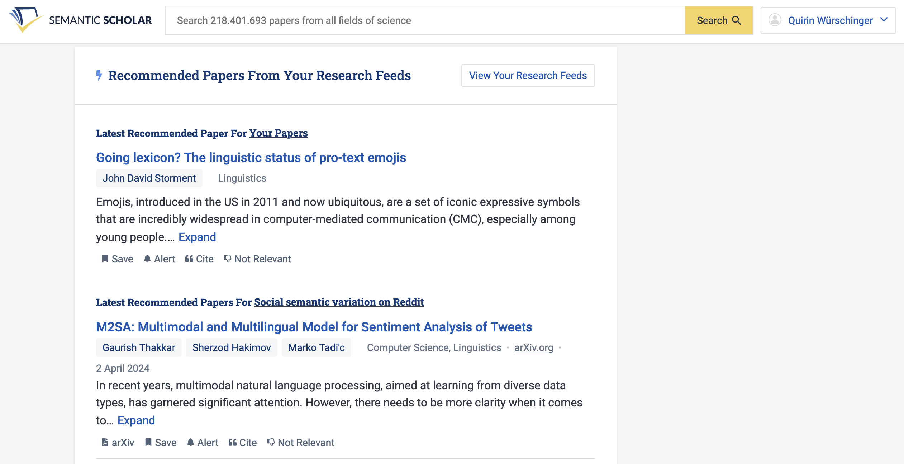
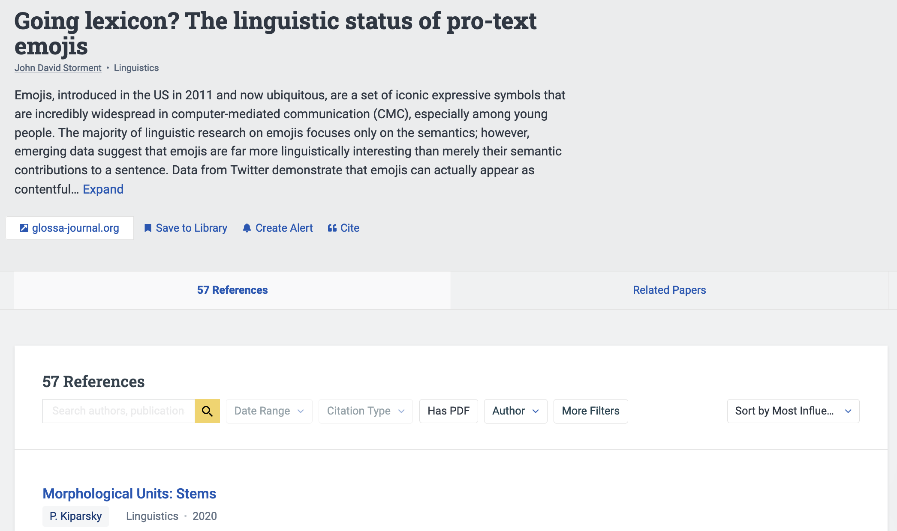
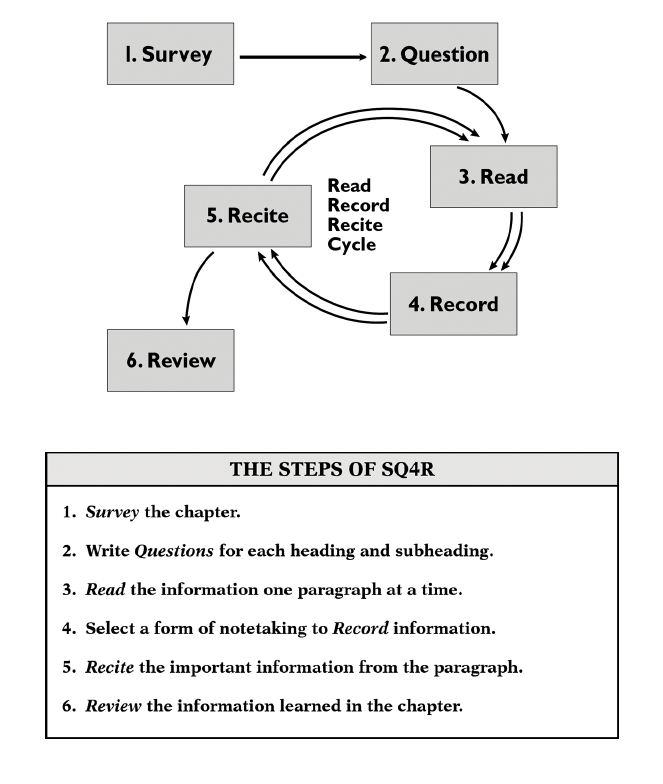
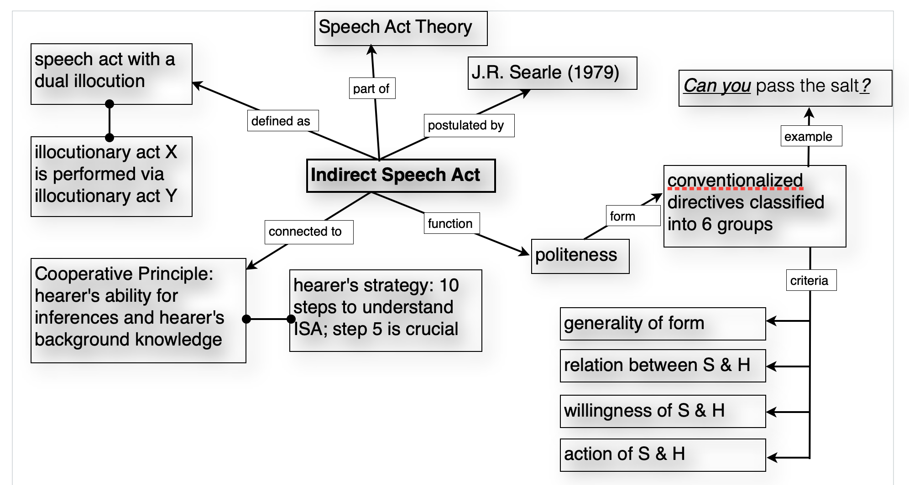

Reference management & reading
Methods in linguistics
Managing References
Finding References
Libraries
LMU
- OPAC
- Databases
- Linguistics and Language Behaviour Abstracts (LLBA): This database focuses on abstracts from approximately 2,000 journals dedicated to the study of linguistics and related disciplines. It also provides summaries of books, book chapters, dissertations, and conference papers.
- MLA International Bibliography: Produced by the Modern Language Association, this database includes citations from journals, books, and dissertations focused on literature, language, linguistics, and folklore.
- JSTOR: JSTOR is a multidisciplinary digital library containing a large amount of academic content. Its linguistics section includes a range of resources from academic journals, books, and primary sources.
- ProQuest: ProQuest is a multidisciplinary research database, providing a variety of resources, including magazines, journals, newspapers, and more. It contains a wide range of materials in the field of linguistics.
- ScienceDirect: ScienceDirect, from Elsevier, provides full text access to over 2,500 journals and 11,000 books. It includes plenty of resources related to linguistics.
- John Benjamins e-Platform: This platform provides a broad range of material across various linguistic sub-disciplines. It’s particularly known for its publications in theoretical and functional linguistics, psycholinguistics, and semantics.
- Oxford University Press Journals: Oxford University Press publishes several important and prestigious journals in the field of linguistics.
- Cambridge Core: This is the place to find a range of linguistics journals published by Cambridge University Press, which covers all aspects of the study of language, from phonetics, phonology and syntax, to sociolinguistics and psycholinguistics.
- Wiley Online Library: Wiley publishes a range of peer-reviewed journals in the field of linguistics, including cognitive linguistics, sociolinguistics, and applied linguistics.
- Ethnologue: While not a traditional academic database, Ethnologue is a comprehensive reference work cataloguing all of the world’s known living languages. It’s very useful for linguistic ethnography and studies of language diversity.
Bayerische Staatsbibliothek (BSB)

Web
- Google Scholar
- OpenAlex
- Open source alternative to Google Scholar
- Semantic Scholar
- Individualised research feed
- 
- Metadata about research papers
- 
- Individualised research feed
- Connected Papers

“Dark” Web
- I can’t recommend using these platforms …
- LibGen
- SciHub
Research Network Platforms
Schneeballprinzip
- Find a good, (recent) relevant reference to a topic.
- Often handbooks provide a high-quality, dense overview.
- Check its references.
- Check the references’ references.
AI-Assisted Services

Evaluating References
Tutorial by the University of Berkeley
- Authority
- Who is the author? What is their point of view?
- Purpose
- Why was the source created? Who is the intended audience?
- Publication & Format
- Where was it published? In what medium?
- Relevance
- How is it relevant to your research? What is its scope?
- Date of Publication
- When was it written? Has it been updated?
- Documentation
- Did they cite their sources? Who did they cite?
Citing References
Warning: Ask the person marking your paper which styles you can use.
- Guides
- In-text citations
- Usually you should use an author-date format
- e.g. “Here’s an interesting quote.” (Schmid 2020: 420)
- Recommended styles
- Usually you should use an author-date format
- Bibliography
- Needs to be consistent.
- Needs to follow one of the style guides recommended above.
- Must only contain sources you have cited in your paper.
Storing References
- Manually
- Recommendation: maintain 1 file with all your bibliographic information
- Using tools
- My recommendation: Zotero (see Using Zotero for Managing References for more information)
- Other tools
Taking Notes on References
- General recommendation: Use a tool for networked notes (e.g. Obsidian) so that you can link notes and thoughts to important concepts (see note-taking).
- Store citation information alongside notes you’re taking (e.g. Schmid 2016: 58).
- Mark everything you copy verbatim to avoid plagiarism.
Using Zotero for Managing References
- Free, open-source, cross-platform, collaborative.
- Store references by using, e.g., a browser extension.
- Insert references automatically via plugins for Microsoft Word, Google Docs, Apple Pages etc.
Practice
- Find relevant references for your research questions
- ≥ 2 monographs
- ≥ 5 papers
- Store these references (and files) effectively (e.g. using Zotero).
- Take notes (e.g. using Obsidian).
Reading
What to Read for Your Project?
- Start with general introductions giving you the broader picture.
- Narrow down your reading to more specific articles, focusing on individual theoretical concepts.
- With each reading refine your keyword list to gradually cover the whole research area.
- If you’re unsure about the relevance of a text, skim: read the abstract, table of contents or index and check for notions that seem to relate to your topic.
- Abstract
- Figures
- Tables
- Conclusion
- Introduction
- Make sure to include the latest publications on your topic.
- Once you get the same sources in the reference section of the texts you read over and over again and no new relevant publications can be found, your reading list has reached the saturation point.
How to Read?
Modes of Reading
- Scanning
- Quick reading, looking for key words
- Skimming
- Cross-reading of the whole text; identification of passages to be read more closely later on
- Selective Reading
- Reading only those passages of the text relevant to your topic.
- The table of contents and/or the index can help you identify relevant passages or with an electronic source use the search function and look for keywords.
- Close Reading
- Careful and critical reading of the full text.
- Usually involves taking notes, highlighting, commenting etc.
- Develop a system that works for you and use it consistently.
- Creative Reading
- Reading with an open mind for inspiration of own ideas.
- Maybe except for the last type, you should always take notes while reading.
SQ4R Method

Reading and Writing
Reading with a specific topic in mind is always tightly linked to writing. For core texts it is advisable to produce an excerpt, so that you do not only rewrite the original text, but process the information contained in the literature, formulate it in your own words and adjust it to your topic.
First reading
- Get a general picture and an outline of the text;
- Note down the structure (headings, chapters, sections, paragraphs) on a piece of paper (index cards or first page of a computer file).
- Indicate irrelevant parts of the text.
Second reading
- Topic of each chapter, section, paragraph.
- Summary of each chapter, section, paragraph.
- Names of important authors/sources, e.g. for further reading.
- Note down possible quotations (indicate pages and page break in the quotation).
- Note down helpful examples, tables, and figures.
- Summarize aspects that are relevant to your own work, mark potential links to your research questions or to chapters in your table of contents.
- Make notes to yourself indicating questions, unclear explanations, links to other texts you’ve read.
Highlighting and Marking
- You can directly work with a photocopy or a PDF of the text and highlight and mark all necessary information and thus prepare a commented version.
- You can use a system of colours to work out the structure of the text.
- Highlight names of authors and researchers, definitions, examples and possible quotations in different ways.
- Comment on the margins with keywords, paraphrases, summaries, etc.
- Cross out passages that are not important for your work.
- Additionally, use post-its, for notes to yourself indicating cross-references to other texts, own ideas, and problematic passages.
- All of this works really well when using Zotero’s PDF reader.
Visualisations

Strategies for Difficult Passages
If you have the feeling that you don’t understand what you’re reading or that you cannot make sense of it, check the following issues (Cottrell 2013):
- Make sure you have the necessary theoretical background for the text – if not, go back to a more general, introductory text.
- Try to briefly sum up what you have read after a few sentences.
- Try to read with a specific question in mind in order to get an answer from the text– if (2) or (3) do not work, re-read the passage, read it aloud.
- Highlight and colour-code relevant notions (see Highlighting and Marking).
- Ask questions:
- What does the author want to show?
- Is there a particular question behind this passage?
- Why is the passage relevant?
- Is it relevant for my topic?
- What do I learn from this?
Critical Evaluation
Cottrell (2013):
- Find and evaluate the line of reasoning – is the information relevant to the topic, logical, understandable, not circular?
- Does the text have a logical structure?
- Are aspects explained before they are applied?
- Is there evidence to support the claims, is it appropriate and reliable, are any relevant issues missing?
- Do the conclusions make sense, are they clearly stated and well thought through?
- Does the evidence support the conclusions?
Practice: Reading (Ilbury 2020)
Meme:
Skimming and Scanning Questions
- How many tweets in the study contain AAVE features?
- Which user had the highest frequency of AAVE feature usage and what was the percentage?
- What are the four most common lexical AAVE features found in the tweets?
- Identify two reasons why White southern British users were selected for the study?
- What is the total number of tweets analyzed in the study?
- Which phonological feature of AAVE had the highest frequency in the dataset?
- What percentage of tweets containing AAVE features were directed at other users?
Comprehension Questions
- What is the primary research question of the study?
- What methodology does Ilbury use to collect and analyze data?
- List three features of AAVE identified in the tweets and provide examples from the study?
Critical Thinking Questions
- Discuss the ethical implications of using AAVE features by non-AAVE speakers on social media.
- Evaluate the strengths and limitations of the methodology used in this study.
References
Cottrell, Stella. 2013. The Study Skills Handbook. Basingstoke: Palgrave Macmillan.
Ilbury, Christian. 2020. “‘Sassy Queens’: Stylistic Orthographic Variation in Twitter and the Enregisterment of AAVE.” Journal of Sociolinguistics 24 (2): 245–64. https://doi.org/10.1111/josl.12366.